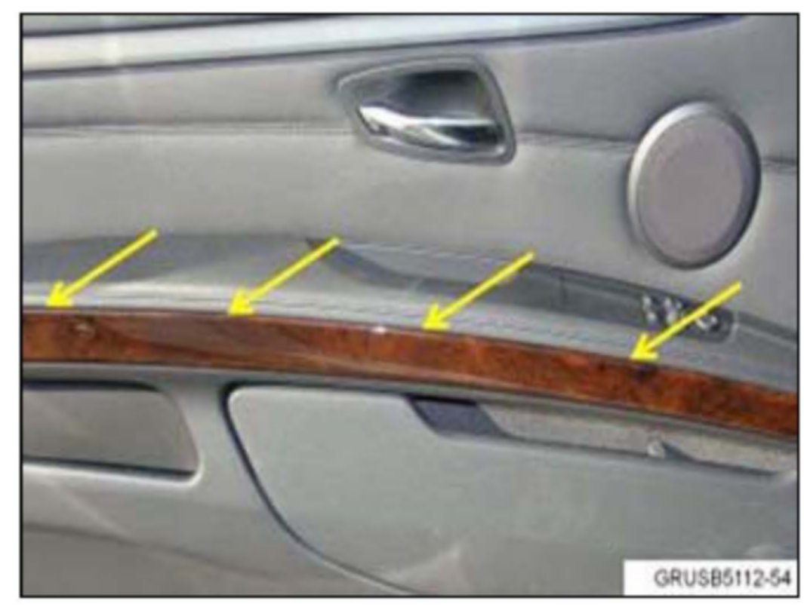
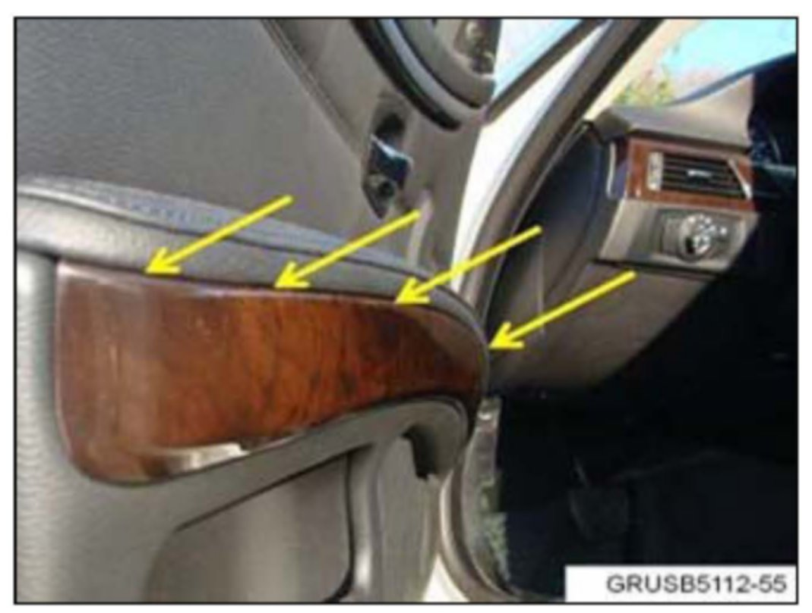
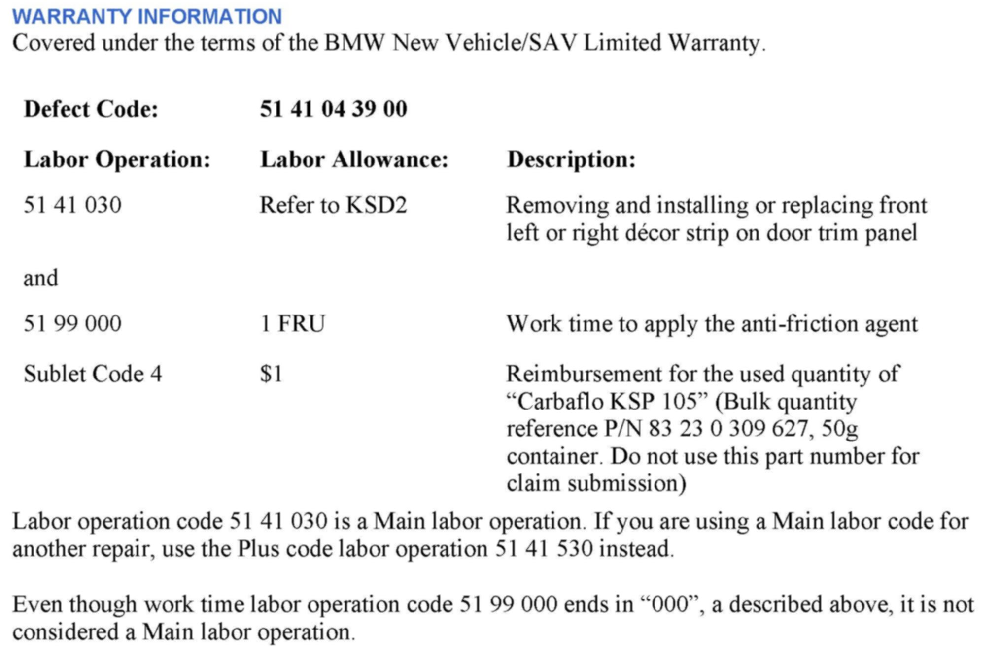

Body - Grating Noise From Door Panel Decorative Trim
SI B51 15 12Body Equipment
April 2012
Technical Service
SUBJECT
Grating Noise from the Door Panel Decorative Trim
MODEL
E92 (3 Series Coupe)
E93 (3 Series Convertible)
SITUATION
A grating noise can be heard from the upper edge of the decorative trim insert of the drivers or passengers door.
CAUSE
The clearance between the decorative trim and the door panel soft armrest cover varies.
PROCEDURE
Confirm the noise is coming from between the door panel decorative trim and the armrest by applying pressure to the armrest area, and then proceed to the next step.
Note:
The following pictures are of the drivers side front door.

1. Remove the door decorative trim panel, using the ISTA Repair Instructions "51 41 030 Removing and installing/replacing decorative strip on front left or right door trim panel" for the affected door(s).

2. With the trim panel removed, place the trim on a clean work surface. Coat the entire length of the upper edge of the trim with the Carbaflo anti-friction agent.
Reinstall the decorative trim panel, and then confirm the noise is gone by applying pressure to the door armrest.
PARTS INFORMATION

WARRANTY INFORMATION